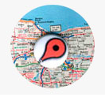

Hoje em dia, café bom não é aquele feito no coador de pano que nossas avós faziam, um novo mundo se abre para nós em matéria
de tipos de grãos, procedência, tipos de torras e jeitos de preparar a bebida, que é tão popular na mesa dos brasileiros
Kombi Coffe
O café que chega até você

Escolha o seu café

Onde encontrar a loja
O Kombi Coffee é móvel. Veja onde você pode encontrar a loja.